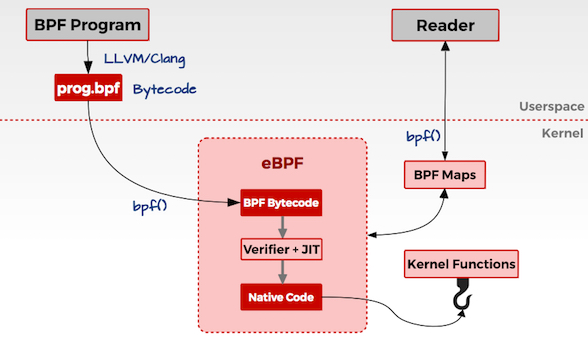

人法地，地法天，天法道，道法自然。
Linux一直没有好用的内核态的动态追踪工具，直到EBPF的出现。EBPF可以动态追踪linux事件，获取运行信息。通过分析这些信息可以用来确定是否存在攻击行为。
1. eBPF
BPF（Berkeley Packet Filter）是一种包过滤器，是很早就有的内核特性，最早可以追溯到1992年。由于其优良的特性，所有UNIX系统都将BPF作为网络过滤的首选技术，比如我们熟悉的Tcpdump，其底层就是依赖BPF实现的包过滤。
2014年，Alexei Starovoitov对BPF进行了彻底的改造，并增加了新的功能，改善了性能，新版本被命名为eBPF(extended BPF)。
在eBPF中，开发者可以在用户空间编写eBPF程序，并将其加载到内核空间执行，不用重新编译内核。
1.1 eBPF原理
Linux内核是一个事件驱动的系统设计，这意味着所有操作都是基于事件来描述和执行的。打开文件、CPU执行指令、接收网络数据包都是事件。eBPF可以在内核中检查这些事件的信息源，并且编写eBPF程序来处理触发该事件的代码。
开发者可以使用C语言或者Python等其他高级语言编写自己的eBPF程序，然后通过LLVM或者GNU、Clang等编译器，将其编译成eBPF字节码。Linux提供了一个bpf()系统调用，通过bpf()系统调用，将这段编译好的字节码传入内核空间。

传入内核后，先用Verifier组件进行安全测试，测试之后通过JIT编译为机器码。这样就可以在eBPF指定的附着点上执行操作逻辑了。
eBPF通过MAP数据结构进行数据存储和管理，eBPF将产生的数据通过指定的MAP数据类型进行存储，用户空间的应用程序作为消费者通过bpf()系统调用，从MAP数据结构中读取数据并进行存储和处理。这就是一个完整的eBPF程序的流程。
1.2 eBPF程序类型
我们可以简单地将eBPF程序的类型分为两个方面：追踪（Tracing）和网络（Networking）。
1. 追踪
未完待续……
参考
《云原生安全攻防实践与体系构建》